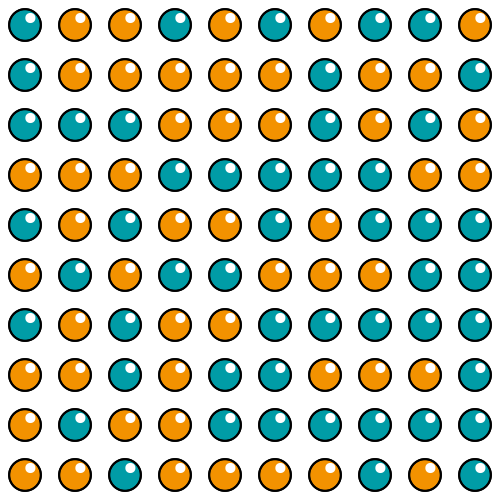
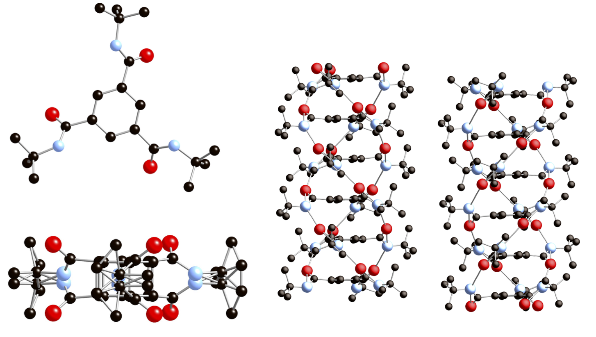

A brief introduction to Yell
Introduction
Yell is a program for analysing diffuse scatteirng from single crystals. Unlike a more popular DISCUS Yell does not perform modelling of a disordered crystal. Instead it directly refines three dimensional pair distribution function (3D-ΔPDF). This approach has several advantages, namely the refinements are easier to set up and take less time to converge, though they do not provide an explicit model of the crystal. The following tutorial will show how to set up and use Yell on several very simple didactic examples of disorder. For more detailed explanation of all Yell commands please see the reference manual.
Three dimensional pair distribution function (3D-ΔPDF).
For an in-depth introduciton see our paper [Weber & Simonov 2012]. The following text is aimed for people already familiar with Patterson techniques.
3D-ΔPDF can be easily obtained from single crystal experimental diffuse scattering by Fourier transform: $$ 3\text{D-}\Delta \text{PDF}=\text{FT}[I_{\text{Diffuse}}] $$ 3D-ΔPDF can be understood as a difference between the crystal pair distribution function (PDF) and its Patterson function: $$ 3\text{D-}\Delta \text{PDF}=\text{PDF}-\text P $$ 3D-ΔPDF directly presents interatomic correlation in the structure. It will contain a positive signal for each interatomic vector which is present more frequently in the real structure than in the average a negative signal for each vector which is present less frequently in the real structure, and zero in the case of no correlation.
Quantitatively, in order to calculate 3D-ΔPDF can be calculated if for each pair of atoms in the structure one knows the joint probability to find two atoms at at the same time $p_{ij}$, the distance between those two atoms $r_{ij}$ and the joint atomic displacement parameter $U_{ij}$ - the covariance matrix of distribution of the interatomic vector. The following section shows how to set up Yell to refine this values from experimental diffuse scattering.
How to start
In order to follow this tutorial you will need to download:
In order to install Yell on Linux and Mac rename the file to yell and move it in the usual installation location.
cp yell /usr/local/bin/yell
For windows users the most comfortable way to start with the command line tool probably is to simply copy it in a folder where you want to run it.
DensityViewer is a simple self-contained executable and does not require installation. In should simply run on all three platforms.
DensityViewer alternatives
DensityViewer is a very simple porgram for visualizing two dimensional sections of diffuse scattering and PDF.
Instead of DensityViewer one can in principle use any drawing software (Paraview, Max3D, ipython, Nexus viewer, Coot). Yell files are not currently formatted to support any of those programs natively, however it is not very complicated to convert them if needed. The output file is an hdf5 file with a simple internal structure. The 3D volume of intensities are in a three dimensional array /data. Diffuse scattering is presented on a regular grid with respect to crystallographic coordinates. The information about the grid is present in the arrays:
unit_cell- usual a, b, c, alpha, beta, gammalower_limits- the minimum of h,k,l for diffuse scattering maps, or u,v,w for PDFstep_sizes- the increment in fractional coordinates per pixel along the three grid direcsion - dh, dk, dl for diffuse scattering and du,dv,dw for PDF
Minimal model file for Yell
As an example we will show hot to calculate diffuse scattering and 3D-ΔPDF from a simple hypothetical crystal. As an example let's take a two dimensional square crystal of solid solution of gold and silver:
The distribution of gold and silver atoms in this model is not random. The nearest neighbors have a slight preference to be different. These correlations are strong enough to be visible in crystal diffuse scattering and the pair distribution funciton.
In the tutorial files open the file model.txt in the folder 1a Subsitituional correlation. It contains a simplified Yell model for the copper-silver example. The first line shows the use of the comments in Yell.
#AgAg example
The comment starts with a hash symbol and goes until the end of the line. Next section defines the unit cell dimensions, the Laue group of the crystal and the grid to calculate diffuse scattering on.
Cell 3.101 3.101 1 90 90 90 LaueSymmetry 4/mmm DiffuseScatteringGrid -30 -30 0 0.1 0.1 1 600 600 1
The grid is defined by nine numbers in the form
DiffuseScatteringGrid min_h min_k min_l step_h step_k step_l N_h N_k N_l
where the firs three numbers define the lower bounds for hkl indices, next three define the step sizes along the three crystallographic axes and the last define the number of pixels to calculate along each direction.
The next section contains selects a (slow) exact method for calculating diffuse scattering and turns off refinement.
CalculationMethod exact Refine false
The next section defines the average unit cell. In this crystal there is one disordered position which is occupied by equal amounts of Au and Ag atoms:
UnitCell
[
AuAg = Variant[
(p=0.5)
Au 1 0 0 0 0.002
(p=0.5)
Ag 1 0 0 0 0.002
]
]
This definition is slightly longer than one would have in the program for refining the averages structure because Yell must need to know slightly more about the real structure. Let's look at this definition in detail. First, the following block defines a section of the model file which describes the contents of the unit cell:
UnitCell [ ... ]
Next, the the following section defines a site within a crystal which can be occupied by either one atom or another each with 50% probability.
Variant[ #defines site which is exclusively occupied by either of the following (p=0.5) #probability of first possibility ... (p=0.5) #probability of second possibility. all probabilities should sum up to 1 ... ]
The atoms are defined in a usual way, by listing atomic type, its occupancy factor within the variant, three fractional coordinates and the isotropic atomic displacement parameter $U_{\text{iso}}$:
Au 1 0 0 0 0.002
The next section defines the possible displacements of the atoms in the unit cell. Since we assume in the current example that none of the displacements are correlated, the section is blank.
Modes[ ]
The last section defines correlations in the structure:
Correlations
[
[(0,0,0)
Multiplicity 1
SubstitutionalCorrelation(AuAg,AuAg,0.5, 0,
0,0.5)
]
[(1,0,0)
Multiplicity 4
SubstitutionalCorrelation(AuAg,AuAg,0.1)
]
[(1,1,0)
Multiplicity 4
SubstitutionalCorrelation(AuAg,AuAg,0.3)
]
]
Correlations are defined in blocks enclosed in square brackets. The firs line in block is the unit cell increment. For example the following line:
(0,0,0)
instructs Yell that this will be a zero-neighbor correlation containing all interatomic vectors which start and end within the same unit cell.
Next line defines the multiplicity of interatomic pair:
Multiplicity 1
which is simply a number of symmetry dependent interatomic vectors in PDF space. In order to gen an in depth explanation see Yell manual section "how to calculate multiplicity".
The last section defines correlations. There are three possible correlations in Yell: SubstitutionalCorrelation, APDCorrelation and SizeEffect which are explained below.
Running Yell
Yell is a simple console program. In order to run it, open a terminal, navigate to the folder containing the model.txt file and then print
yell
After a few seconds Yell will produce four files: model.h5 contains diffuse scattering which was calculated from model, delta-pdf.h5 contains the calculated 3D-ΔPDF, the files full.h5 and average.h5 are usually ignored.
The calculated diffuse scattering can be observed using the program DensityViewer. The program has a very basic funcitonality, but allows to quickly and easily explore diffuse scattering maps using two dimensional sections and false color representation of scattering or PDF intensity. In order to view a file, simply open a .h5 and explore the resulting images, you should get something similar to the following:
Left: diffuse scattering from the above model in the red-black colormap, right: 3D-ΔPDF from the same model; red color corresponds to positive and blue-green to negative signals.
Types of correlations
The folders 1a 1b and 1c show the three basic types of correlations in Yell. Disorder from every crystal which average structure can be solved in conventional crystallographic programs can be presented as a combination of these correlations. This chapter presents a brief overview of the correlations.
Substitutional correlation
We say that a crystal contains a substitutional correlation when some position in its average structure is substitutionally disordered between two or more atoms or molecules and occupancies of those species in the crystal show a short range correlation. One of the examples of substitutionally disordered crystal is the hypothetic AgAu crystal defined above.
In Yell, substitutional correlation defined between two variants. For example in AgAu example the substitutional correlation between two sites was defined as:
SubstitutionalCorrelation(AuAg,AuAg,0.5, 0,
0,0.5)
where AuAg is the name of a variant and the next four numbers define a matrix of joint probabilities to find two gold atoms, a pair of gold and silver, and a pair of silver atoms on the ends of the vectors.
For the zero neighbor the start and the end of the vector relate to the exact same variant, thus the diagonal of the matrix should contain the average occupancies of each element and all off-diagonal elements should be equal to zero. Also note, that each row and each column should sum up to the average occupancy of this element, for example:
$$ p_{\text{AuAu}}+p_{\text{AuAg}}=p_{\text{Au}} $$which makes the last column and the last row of each joint probability matrix dependent. Since Yell knows the average occupancies, it can automatically calculate the last column and row so they can be omitted in the definition, like this:
SubstitutionalCorrelation(AuAg,AuAg,0.5) #equivalent to the above
As presented in the figure above, the substitutional correlation will show up in 3D-ΔPDF as a single positive or a single negative peak.
If the probabilities of the two variants are not correlated than each joint probability will be equal to the product of occupancies of each element. In our case this would correspond to the following matrix:
SubstitutionalCorrelation(AuAg,AuAg,0.25,0.25,
0.25,0.25)
Such correlation will not add any contribution to diffuse scattering or 3D-ΔPDF.
ADP correlation
We say that atomic displacements are correlated in a crystal, when displacements of some atoms on average change the position of the atoms around it. Due to presence of interatomic forces the displacements of the atoms, thermal vibrations of atoms are always correlated. However, diffuse scattering which corresponds to such correlations, the so called thermal diffuse scattering (TDS) is usually concentrated in a proximity of Bragg peaks and is often removed with the Bragg peaks and thus might not show up in PDF analysis.
The folder 1b ADPCorrelation contains a simple model with correlated atomic displacements. In such model the average structure is not disordered and consist of only one atom:
Au = Au 1 0 0 0 0.02
Note that the first part "Au=" is a slightly unusual way to assign a name "Au" to a gold atom. The conventional average structure programs omit the redundant sign =. In Yell we add it just to unify the way of defining names.
Next, the possible displacments of atom should be defined. This is done in the modes section:
Modes[ Au_x = TranslationalMode(Au,x) Au_y = TranslationalMode(Au,y) ]
The names of the modes are self explanatory, Au_x for example is a simple translation of the gold atom. In case of organic molecules, one might define more complicated displacements, such as translations or rotations of whole molecules.
The last section contains the correlations:
[(1,0,0) Multiplicity 4 ADPCorrelation(Au_x,Au_x, 0.01) ADPCorrelation(Au_y,Au_y, 0.005) ]
The correlations are defined as covariance of atomic displacements. Their unit is squared angstoems, the same as for atomic displacement parameters. For example the following line above:
ADPCorrelation(Au_x,Au_x, 0.01)
means that the two atoms move in phase. More presisely, that average of the x displacement of one atom multiplied by the x displacement of its neighbor is equal to $\langle \Delta x_i \Delta x_j \rangle = 0.01\text{A}^2$:

In 3D-ΔPDF, atomic displacement correlations show up as negative-positive-negative mexican hat-like shapes (see the figure above). Diffuse scattering is also characteristic, since it is almost equal to zeron in the center of reciprocal space and gradually increases towards longer reciprocal lattice vectors.
Size effect
We say that a size effect is present in a structure, if substitutional disorder on some site influences the positions of the atoms around it. For example, this can happen if one position is mixly occupied by a small and a large atom. In such case the large atom will push its surroundings away from it, while the small will pull the surroundings towards it, thus the name size effect. In principle the efect can involve rotations or deformations of the molecules, not only displacements.
A model containing size effect is presented in the folder "1c Size effect". In order to set up a size effect, the crystal should contain a variant occupied by two or more chemical units, in our case we again selected a mixture of gold and silver atoms. Then, the size effect can be defined in the correlation section:
[(1,0,0) Multiplicity 4 SizeEffect(Au,Au_x, 0.01) ]
The above instruction means that if a gold atom is present at a certain position, than another gold atom next to it in direction 100 will be displaced by 0.01A.

In 3D-ΔPDF the size effect shows up as a neagtive-positive pair of peaks.
3D-ΔPDF refinement
Given a model of correlation, Yell can refine the exact values for all the above listed correlations. The example of such model is prepared in a folder 2 Refinement. The important parts of this model is first that refinement flag is turned on:
Refine true
Next, several refinable variables are defined by the following lines:
RefinableVariables [ dp1=0; dp2=0; ]
After this, this variables can be used instead of numbers in any later part of the file. In the presented case, we use it in substitutional correlation:
[(1,0,0) Multiplicity 4 SubstitutionalCorrelation(AuAg,AuAg,1/4+dp1) ]
Also note that arithmetic expressions are also allowed in Yell and will be calculated using the correct values of the variables in the course of refinement.
After running Yell it will report the refined scale factor and variables:
Refined parameters are: Scale 132.0590(7) RefinableVariables [ dp1=-0.1370032(11); dp2=0.0480141(7); ]
and R factor
Rw=0.00233268
The refined values are not currently added to the input file, but can be easily copied and pasted the the mode.txt.
Tricarboxamide
In order to show how 3D-ΔPDF can be applied to a real world example, I have prepared a diffuse scattering dataset from an organic compound presented below. This is the same dataset which was used in [Simonov et.al. 2014].
The crystal is hexagonal with a space group $P6/m$. Its average structure is disordered by a mirror plane. Both a molecule and its mirror image occupy the unit cell with 50% probability. In the real structure each unit cell is occupied by either copy of the molecule. We will call those copies "up" if the oxygen atoms are pointing up or "down" otherwise. The molecules are arranged in long chains along the $c$ axis by the $6_3$ screw axis, such that only "up" molecules can stack on top of "up" molecules. This packing assures that all three hydrogen bonds between the oxygen and amino groups are saturated.
The diffuse scattering is present in a form of sharp planes perpendicular the the $c^*$ axis. Within planes diffuse sacttering forms honeycombs (see the figure below). The 3D-ΔPDF consists of a flower pattern at each unit cell translation. The sign of the pattern alternates: the senter is positive, the first neighbor is negative and so on. This can be understood qualitatively that for neighbouring columns there is a preference to have different orientation.

The model for this crystal along with the experimentad diffuse scattering is in the folder "4 Tricarboxamide. The model file is relatively standard and defines a substitutionally disordered crystal. However, a number of settings is changed in it in order to make calculation faster. Firstly, the calculation method is changed to approximate:
CalculationMethod approximate
As the name suggests, this turns an approximate FFT based method for calculation of diffuse scattering. This method is similar to the one used by protein refinement programs to calculate struture factors. The method can be fine tuned for speed and precision and it is done in this example by:
FFTGridSize 128 128 12
Second, the scattering from a molecular stack is cached in a "molecular scatterer".
MolecularScatterers [ V1ms = ... ]
This allows to use a molecule as a scattering entity rather than explicitly sum over each interatomic contribution.
Refinement of the nearest neighbor correlations are left as an exercise to the reader.